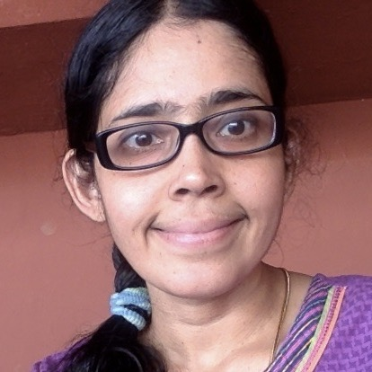
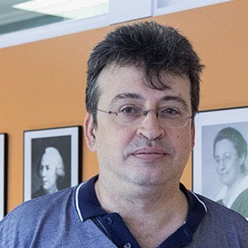
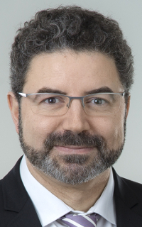
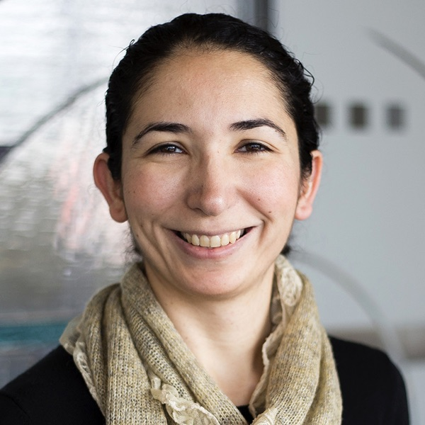

Hybrid systems are complex dynamical systems that combine discrete and continuous components. Reachability questions, regarding whether a system can run into a certain subset of its state space, stand at the core of verification and synthesis problems for hybrid systems. Successful reachability analysis methods for hybrid systems require the unification of techniques from at least two research areas:
The existing, successful solutions for reachability analysis for hybrid dynamical systems cleverly integrate symbolic and numerical reasoning to tackle the scalability challenge. For instance, the reachable set computation methods explicitly construct flow-pipes that numerically overapproximate the reachable states over time, while efficient computation of such overapproximations requires symbolic representations such as support functions. Similarly, constraint solving methods symbolically encode reachability properties as logic formulas, while solving such formulas requires numerically-driven decision procedures. The key goal of the Symbolic and Numerical Methods for Reachability Analysis (SNR) workshop is to provide a platform to further explore synergies among these approaches by bringing together the experts in these two domains.
The SNR workshop aims to catalyze work on the interface of symbolic and numerical methods for the reachability analysis. The scope of the workshop includes, but is not restricted to, the following topics:
| Slot | Speaker | Talk Details |
|---|---|---|
| 08:50-09:00 | Raissi and Trivedi | Opening Remarks |
| 09:00-10:00 | B Srivathsan | Symbolic enumeration for reachability in timed automata |
|
B Srivathsan is an Associate Professor at Chennai Mathematical
Institute, India. His primary research interest is in the algorithmic
analysis of timed automata. His contributions have resulted in the
development of T-Checker, an open-source model-checker for timed
automata. Apart from this, Srivathsan has worked on subjects revolving
around logic, automata and games.
Srivathsan completed his PhD at the University of Bordeaux, France and
his Masters and Bachelors at the Indian Institute of Technology Bombay,
India.
|
Timed automata are a well established model for the verification of
real-time systems, and have been implemented in industry-strength tools.
The most successful algorithms for solving reachability in timed
automata proceed by systematically enumerating symbolically represented
configurations of the automaton.
Over the years, several non-trivial techniques have been developed to
help terminate this symbolic enumeration as early as possible. In this
talk, we will shed light on two central techniques: the first one
studies simulations between symbolic states and allows to prune
“smaller” states; the second one goes into a local-time semantics for
networks of timed automata and manages to tackle the explosion due to
concurrency.
|
|
| 10:00-10:30 | Coffee Break | |
| 10:30-11:30 | Krishna S. | Reinforcement Learning for Real-Time Systems |
|  |
Bio. Krishna S. is an associate professor of Computer Science at IIT Bombay.
Her areas of research are broadly in Automata, Logics, Games and the formal verification of timed and probabilistic systems.
|
TBA
|
| 11:30-12:30 | Vicenç Puig | Reachability Analysis of Linear Discrete-time Uncertain Systems: Methods and Applications |
|  |
Bio. TBA
|
In this presentation, the problem of reachability analysis of linear discrete-time uncertain systems will be revised presenting
the main problems that appear during the numerical calculations and how the different state-of-art methods try to avoid them.
The interest of rechabibility analysis for the considered familiy of systems is presented using several application examples.
|
| 12:30-14:30 | Lunch Break | |
| 14:30-15:30 | Andreas Rauh | Stochastic, Set-Based and Mixed Uncertainty Representations for the Reachability Analysis of Dynamic Systems |
|
Bio. Andreas Rauh is a Professor with the Department of Computing Science, Carl von Ossietzky Universität Oldenburg,
Germany where he is the head of the group Distributed Control of Interconnected Systems. He received his PhD in 2008 from
the Faculty of Engineering and Computer Science at the University of Ulm, Germany working on the "Theory and application
of interval methods for analysis and design of robust and optimal controllers of dynamic systems".
|
Reachability analysis for uncertain dynamic systems can be performed either with the help of stochastic or set-valued approaches, generally representing the notions of aleatory and epistemic uncertainty. Stochastic approaches aim at describing the reachable states in terms of suitable probability distributions. Assuming that a dynamic system is described with the help of a stochastic differential equation in the continuous-time case or with the help of a stochastic difference equation in the discrete-time counterpart, the exact solutions are given with the help of the Fokker-Planck equation (a second-order parabolic partial differential equation) and multi-dimensional nonlinear convolution integrals, respectively. These expressions, however, can only be solved explicitly, both in the continuous- and discrete-time case, if specific assumptions are satisfied. The most well-known case for a closed-form solution is the one of linear dynamic systems with Gaussian representations of the system states and additive normally distributed noise. Then, the closed-form solution of the approaches mentioned above leads to the prediction stage of the Kalman-(Bucy) Filter. In practically all other cases, however, approximations are inevitable. These are given by, just to mention a few alternatives, Gaussian mixture approaches, prediction stages of Unscented Kalman Filters, particle filters, or higher-dimensional models making use of Koopman or Carleman embeddings. |
|
| 15:30-16:00 | Coffee Break | |
| 16:00-17:00 | Nacim Ramdani | Reachability analysis of hybrid systems |
|  | Bio. Nacim Ramdani is Full Professor of Control Systems Engineering with the Université of Orléans and IUT de Bourges, since september 2010. He is affiliated with the research centre Laboratoire PRISME Univ. Orléans - INSA CVL and the joint Graduate School MIPTIS of the Université of Orléans, INSA CVL, and the Université François Rabelais of Tours, France. He is the head of the "Robotics and ICT" (IRAUS) department of PRISME research centre, since Jan. 2018. His current research interests revolve around developing robust numerical methods for the analysis, monitoring, and control of cyber-physical and autonomous systems in presence of uncertainty, and robust state estimation and data fusion with applications to healthcare, autonomous robotics, smart homes and smart grids. He mainly focuses on interval methods and related set computation techniques. |
The talk will emphasize the challenges underlying and the solution techniques for reachability analysis
of linear and nonlinear hybrid systems. The talk will describe approaches for flow-pipe computation using
interval analysis and set computation techniques. It will then review constraint solving techniques for
detecting intersections with guard sets and computing discrete transitions.
Finally, it will show how to combine both approaches for seamless hybrid reachability computation.
|
| 17:00-18:00 | Necmiye Ozay | Zonotopic Backward Reachability: Efficient Algorithms and Applications in Synthesis and Falsification |
|  |
Bio. Necmiye Ozay received her B.S. degree from Bogazici University, Istanbul in 2004, her M.S. degree from the Pennsylvania State
University, University Park in 2006 and her Ph.D. degree from Northeastern University, Boston in 2010, all in electrical engineering.
She was a postdoctoral scholar at the California Institute of Technology, Pasadena between 2010 and 2013. She joined the University of
Michigan, Ann Arbor in 2013, where she is currently an associate professor of Electrical Engineering and Computer Science. She is also
a member of the Michigan Robotics Institute. Dr. Ozay’s research interests include hybrid dynamical systems, control, optimization and
formal methods with applications in cyber-physical systems, system identification, verification & validation, autonomy and dynamic
data analysis. Her papers received several awards. She has received the 1938E Award and a Henry Russel Award from the University of
Michigan for her contributions to teaching and research, and five young investigator awards, including NSF CAREER. She is also a recent
recipient of the Antonio Ruberti Young Researcher Prize from the IEEE Control Systems Society for her fundamental contributions to the
control and identification of hybrid and cyber-physical systems.
|
Zonotopes are widely used for over-approximating forward reachable sets of uncertain dynamical systems for verification
purposes. However, their use for backward reachability, which is relevant for control synthesis, is somewhat limited.
The main challenge here is that the backward reachability analysis is a two-player game and involves Minkowski difference
operations, but zonotopes are not closed under such operations. In this talk, I will discuss our recent results for
inner-approximating backward reachable sets using zonotopes and constrained zonotopes. After a brief discussion of
complexity and approximation algorithms, I will present two use cases: one in correct-by-construction control synthesis,
second in synthesis guided falsification. Several examples from autonomous systems will be presented, including those using
perception-based neural network controllers. Joint work with Liren Yang.
|
| 18:00-18:10 | Raissi and Trivedi | Closing Remarks |
Research papers must present original unpublished work which is not submitted elsewhere. In order to foster the exchange of ideas, we also encourage work-in-progress papers, which present recent or on-going work. The papers should be written in English and formatted according to the EPTCS guidelines. Papers can be submitted using the EasyChair system. All submissions will undergo a peer-reviewing process.
Accepted research papers will be presented at the workshop and will be published in the Electronic Proceedings in Theoretical Computer Science (EPTCS). Accepted work-in-progress papers will be presented at the workshop but will not be included in the proceedings.